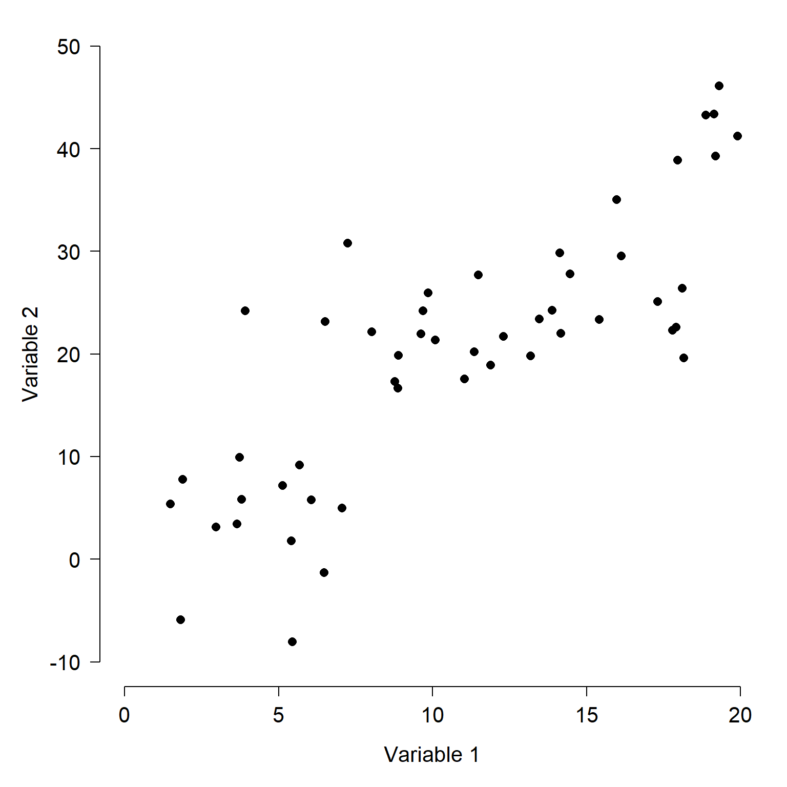
27 Ordination
27.1 Introduction
Humans are visual creatures, relying much more on their sense of vision than other senses like smell for understanding the world. When’s the last time you smelled a dataset?
Unfortunately, humans are also creatures of 3 spatial dimensions, and that severely limits our ability to “see” patterns in data. Even if patterns in data might exist clearly in 4 or 5 dimensions, our primate brains just won’t see those patterns. Instead, we need ways to bring those high-dimensional patterns down to 3 or fewer. Or, ways to bring 3 dimensional patterns down to 1 or 2, for ease of interpretation. These practices all fall under the umbrella of dimension reduction. One very powerful set of techniques for dimension reduction is ordination. A good ordination will reveal previously unseen (or unseeable) patterns in data, allow cluster identification, or even show gradients in the data that researchers didn’t know they were looking for.
Ordination is literally ordering observations along two or more axes. We put observations in order by translating them into a new coordinate system. How that translation is done varies wildly among ordination techniques. No matter how they work, all ordination methods have the same goal: representing patterns in fewer dimensions than there are variables. This makes ordination an approach to exploratory data analysis. Most ordination techniques allow to better see patterns, but they are not inferential tests themselves.
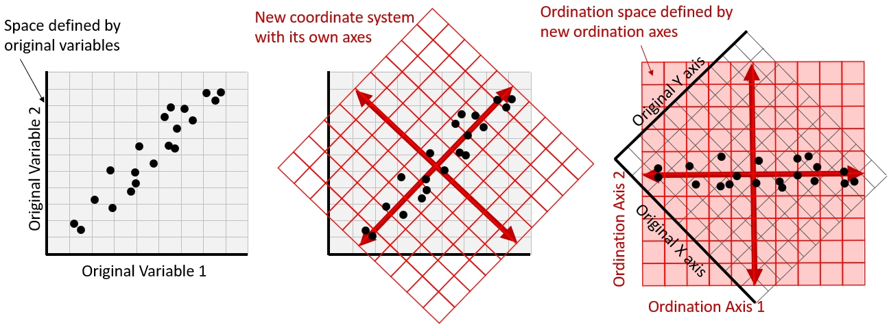
The applications of ordination overlap with those of the multivariate techniques that we have already seen:
- Dimension reduction: Summarizing variation across many variables using a smaller number of synthetic axes, making complex multivariate datasets easier to visualize and interpret.
- Gradient discovery: Identifying major patterns of variation among observations, which may represent underlying biological or environmental gradients.
- Group identification: Visualizing similarities and differences among observations, including identifying potential clusters of observations that share similar characteristics.
These goals are not mutually exclusive. Dimension reduction is accomplished by finding gradients in the data that are not necessarily equivalent to any of the original variables. The first is what ordination does mathematically; the second is often what we hope to find biologically. Group identification can occur when we find observations forming clusters in an ordination plot, which is itself created by plotting observations against the latent gradients identified by the algorithm. The connection to clustering from the previous chapter should be obvious.
27.1.1 Ordination terminology
Ordination is a very different approach to statistics than we have seen so far in this course. We have largely stepped outside of the world of modeling and hypothesis testing, because most ordination methods are not hypothesis tests. But, we are still using many of the building blocks of inferential statistics that we have already learned. For example, the concepts of variance and covariance are of central importance in many ordination techniques.
One of the biggest changes is that we need to start thinking of variables as being equivalent to axes. This is directly related to the notion of (spaces and coordinate systems)[#sec-diss-space-coord] that we explored in Chapter 25. The dataset defines one coordinate systemThis is somewhat similar to how in Chapter 25 we started thinking of observations as equivalent to vectors.
27.1.2 Types of ordination
There are many methods of ordination, which differ in how they construct ordination axes and what kinds of patterns they are designed to reveal. We can classify these methods in two ways: whether the ordination is constrained by explanatory variables, and how the ordination axes are calculated.
27.1.2.1 Constrained vs. unconstrained ordination
In unconstrained ordination, the axes are calculated from the variation among observations without using external explanatory variables. For example, we might use measurements of several morphological traits to ordinate specimens, allowing us to identify major patterns of morphological variation. We could then investigate whether those patterns correspond to differences among species, habitats, or other characteristics. Figure 27.2 below shows how an unconstrained ordination is constructed using the A-E-S matrix schema that we saw in Section 24.2.
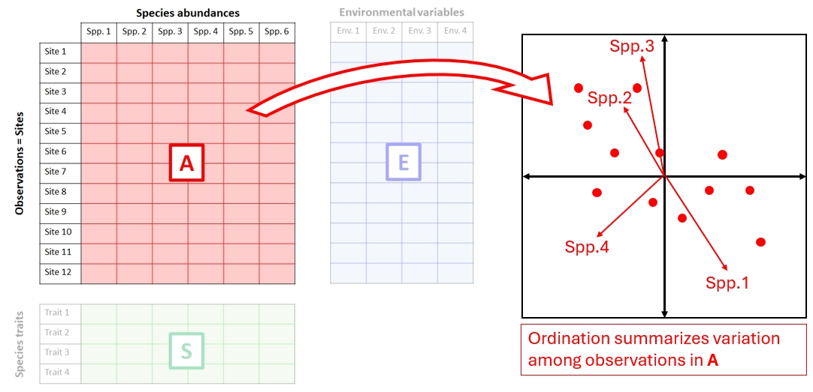
In constrained ordination, the axes are constructed to represent variation associated with one or more explanatory variables. For example, we might use environmental variables such as temperature, precipitation, and elevation to explain variation in species composition across sites. Rather than simply finding the major patterns of variation in species composition, constrained ordination focuses on the portion of that variation that can be explained by the environmental variables.
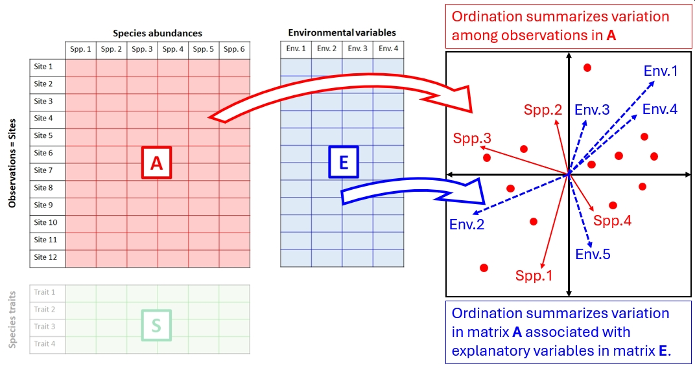
Constrained ordination is often called canonical ordination, particularly in ecology. The term canonical refers to mathematical methods that identify relationships between sets of variables, as in canonical correlation analysis. In ecological applications, canonical ordination generally refers to methods that construct ordination axes using explanatory variables. However, the term has a broader mathematical meaning and is not always synonymous with constrained ordination.
27.1.2.2 Eigenanalysis vs. optimization
Ordination methods also differ in the mathematical procedures used to construct their axes.
Some methods, including principal components analysis (PCA) and principal coordinates analysis (PCoA), use eigenanalysis: mathematical procedures that decompose a matrix into eigenvalues and eigenvectors. In linear algebra, an eigenvector is a vector whose direction is not changed by a linear transformation. An eigenvalue describes how an eigenvector is scaled by the transformation (see this video for visual explanation). Mathematically, we can write
\[\mathbf{A}\vec{v}=\lambda\vec{v}\]
where \(\mathbf{A}\) is the matrix that describes a linear transformation, \(\vec{v}\) is an eigenvector, and \(\lambda\) is an eigenvalue. Again, go watch this video.
In Figure 27.1, the red vectors in the center panel are the eigenvectors which will define the axes of the ordination space. An The eigenvectors are used to construct ordination axes, while the eigenvalues describe the amount of variation represented by those axes. These methods generally produce a solution directly through matrix calculations.
Other methods use numerical optimization, an iterative process that searches for a configuration of observations that best satisfies a particular criterion. For example, nonmetric multidimensional scaling (NMDS) arranges observations in a low-dimensional space so that the ranked distances between observations correspond as closely as possible to their ranked dissimilarities in the original dataset. The algorithm repeatedly adjusts the positions of observations to minimize a measure of disagreement called stress.
Both approaches produce ordinations, but they differ in what their axes represent and how faithfully they preserve relationships in the original dataset. In methods such as PCA, the ordination axes are calculated as linear combinations of the original variables, allowing us to interpret each axis in terms of those variables. Other eigenanalysis methods, such as PCoA, derive their axes from a distance matrix rather than directly from the original variables.
In optimization-based methods such as NMDS, the axes do not have a direct mathematical relationship with the original variables. Instead, the objective is to arrange observations so that distances between them in the ordination space reproduce the ranked dissimilarities in the original dataset as closely as possible. Consequently, an NMDS configuration can be rotated or reflected without changing its meaning, because the relationships among observations remain unchanged. In fact, in vegan::metaMDS(), which performs NMDS, the default post-processing includes rotating the configuration so that its first axis aligns with the direction of maximum variance. Although an eigenanalysis-based configuration can also be rotated, doing so generally changes the mathematical interpretation of its axes. For example, rotating a PCA configuration would mean that the first axis no longer necessarily represents the direction of maximum variance.
| Method | Constrained? | Main computational approach |
|---|---|---|
| Principal components analysis (PCA) | No | Eigenanalysis / SVD |
| Principal coordinates analysis (PCoA) | No | Eigenanalysis |
| Nonmetric multidimensional scaling (NMDS) | No | Iterative optimization |
| Redundancy analysis (RDA) | Yes | Regression + eigenanalysis |
| Canonical correspondence analysis (CCA) | Yes | Weighted regression + eigenanalysis |
| Distance-based redundancy analysis (dbRDA) | Yes | Distance-based eigenanalysis + regression |
| Linear discriminant analysis (LDA) | Yes | Generalized eigenanalysis |
27.2 Unconstrained ordination methods
27.2.1 Principal components analysis (PCA)
27.2.1.1 Introduction
The first and probably most commonly used ordination technique is principal component analysis (PCA). It works by finding synthetic gradients that capture most the variation between the observations more efficiently than the original variables. These gradients are calculated by finding linear combinations of the variables. These combinations really define a rotation, a kind of linear transformation, of the the original coordinate system. There are an infinite number of ways that we could apply a linear transformation to the data; the principal components are just the eigenvectors of the transformation captures the greatest variance on the first axis; the second greatest variance on the second axis, and so on.
27.2.1.2 What PCA does
To get an intuitive understanding of PCA, work through it using an imaginary dataset with two variables, Variable 1 and Variable 2. You could capture and display all the information about this dataset in a 2-d scatterplot, by simply plotting one variable against the other. Likewise, you could capture and display all of the information about a 3-dimensional dataset with a 3-d plot. For 4 or more dimensions, a true scatterplot can’t be rendered sensibly or even understood by our meat-based brains.
One way to describe the variation among the observations in Figure 27.4 is to think about how the samples vary along each axis. The figure below shows how the variation among samples can be broken down into the variation in Variable 1 and the variation in Variable 2. When we say “variation in variable 1”, we mean “deviation between the values of variable 1 and the mean of variable 1”. That is what is shown in Figure 27.5 below.
- Each point, or sample, has a Variable 1 coordinate and a Variable 2 coordinate.
- Each point’s value for Variable 1 can be thought of as the difference between that value and the mean of Variable 1.
- Likewise, each point’s value for Variable 2 can be thought of as the difference between that value and the mean of Variable 2.
- The position of each point can thus be reframed as its deviation with respect to the Variable 1, and its deviation with respect to Variable 2. This reframing is the same as centering each variable (i.e., subtracting the mean).
- The total variance among the samples is equal to the variance with respect to Variable 1 plus the variance with respect to Variable 2.
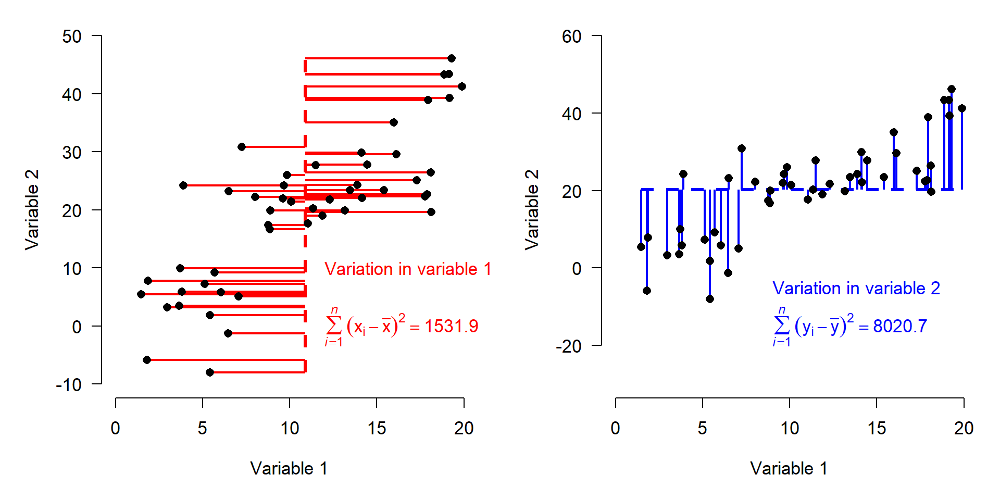
Figure 27.5 above shows how the total variation in the dataset is split up (“partitioned”) into variation in Variable 1 and variation in Variable 2.
Describing each observation as its deviation from the mean of each variable has the effect of centering the points at the origin. Notice that the variation, expressed as sums of squared deviations, is unchanged (Figure 27.6).
Figure 27.6 below shows the data as deviations from the means of each variable. Notice that the variation is each direction is unchanged from Figure 27.5.
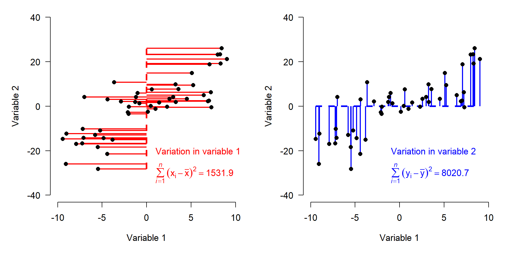
Next, we standardize each variable to have a variance of 1. This means that the original values are converted to Z-scores by subtracting the mean and dividing by the SD (i.e., they are z-scaled). Recall from Section 11.4.1 that the z-score of an observation \(x\) is
\[z\left(x\right)=\frac{x-\mu}{\sigma}\]
Doing PCA without standardizing variables will distort the results because each variable’s importance in the PCA will depend on its magnitude, not its relationship to other variables. Standardization puts variation along any axis on equal footing. Figure 27.7 shows the data as deviations from the variable means after standardization. Compare this figure to Figure 27.6 above. All that changed are the axis scales and the sum of squared deviations. Note that the sums of squares are equal for both variables now.
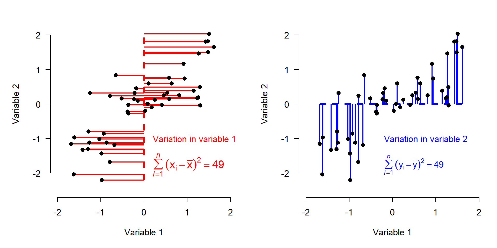
The goal of PCA is to find a new coordinate system that puts the most variance possible on its first axis, then the second most variance on its second axis, and so on. This new coordinate system will have the same number of dimensions as the original dataset. But whereas in the standardized dataset all variables (axes) have the same amount of variation associated with them, in the PCA coordinate system some axes will explain more variation than others.
The variation among the observations is defined in terms of Variable 1 and Variable 2, and Variable 1 and Variable 2 contributed equally to the total variation. But, we could describe most of the variation between points with just one variable, or axis, the red line (Figure 27.8). Any remaining variation will be in the direction perpendicular to the red axis, the blue axis (dashed line).
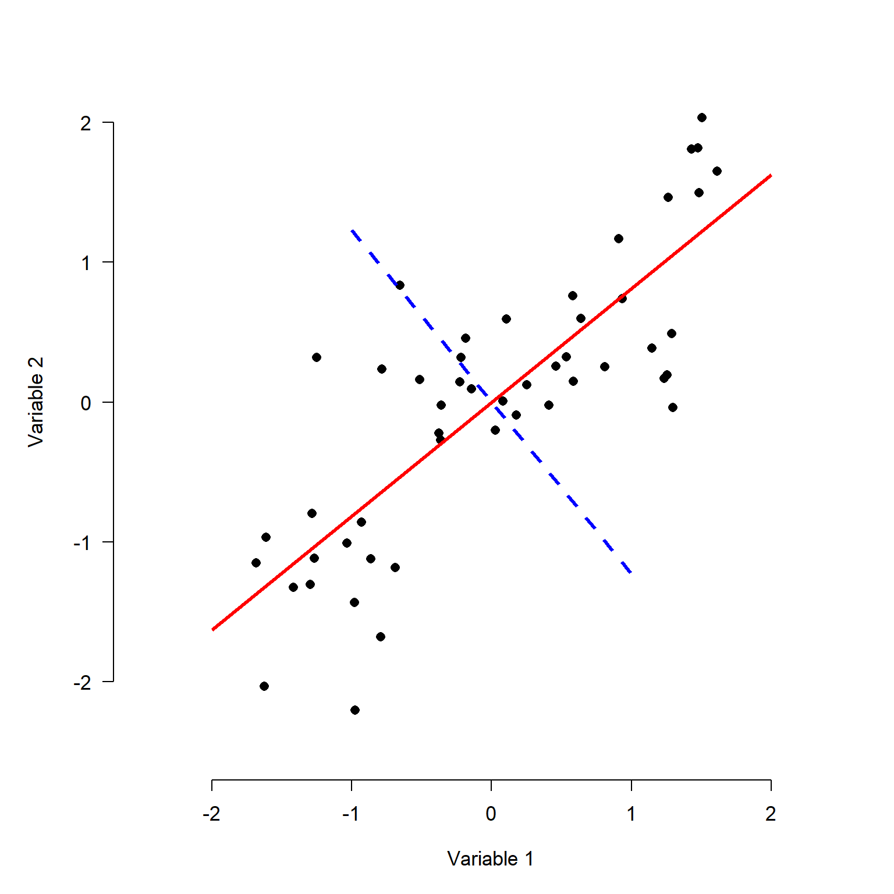
The red axis is a vector that contains information about both Variable 1 and Variable 2. It is tricky, but not too hard, to calculate each observation’s deviations from the mean of the red axis (left panel below) (Figure 27.9). We can also calculate the deviations along a perpendicular vector, because even after describing the variation in the red direction, there is still some variation in the blue direction (right panel).
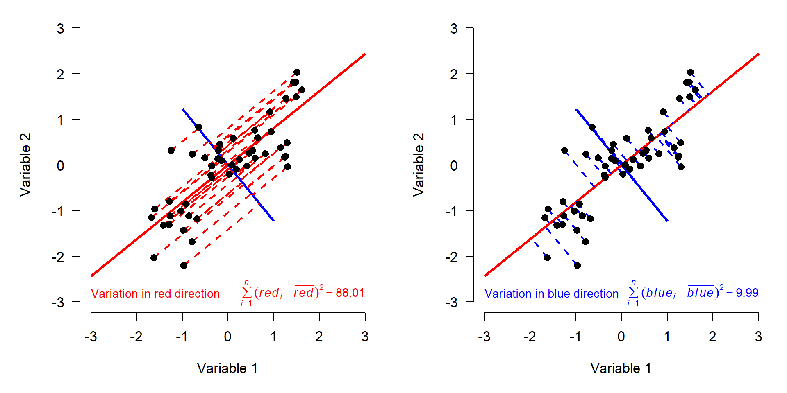
We know that the variation along the red and blue axes is the same as the variation on the Variable 1 and Variable 2 axes, because the sums of squares are the same (\(76.6 + 21.4 = 49 + 49\)) . The red and blue axes are just different ways of orienting the data to express the same patterns. All we really did was rotate the original coordinate system (defined by Variables 1 and 2) to a new coordinate system (Figure 27.10).
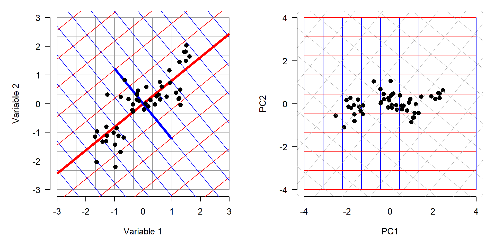
27.2.1.3 Example using vegan
For an example PCA analysis, let’s revisit the small mammal measurement data from Section 26.2.2. Download the individual measurement dataset and the taxonomic dataset and put them in your working directory.
tax <- read.csv("data-neon-taxa.csv")
ind <- read.csv("data-neon-ind-meas.csv")We are going to use PCA to explore variation in small mammal morphology. First we need to organize the data. Cut the measurement data down to just the columns we need: individual, species, and the four standard measurements.
use.cols <- c("tagID", "abb", "totalLength",
"tailLength", "hindfootLength",
"earLength", "weight")
dx <- ind[,use.cols]
# only want individuals with no missing measurements
dx <- dx[complete.cases(dx),]How many individuals do we have of each species?
rev(sort(table(dx$abb)))
Pergos Perboy Perman Perleu Musmus Reimeg Chapen Onyleu Ratrat Dipord
1486 745 704 634 390 320 294 273 258 203
Reimon Perfla2 Pertru Myorut Chahis Sorcin Perpar Chabai Micoec Dipmic
185 170 110 86 79 51 41 35 34 29
Sighis Chacal Chaint Reiful Micoch Onytor Micpen Ochnut Tammin Icttri
28 27 26 25 25 23 22 18 17 17
Neoflo Perpol Peratt Neoalb Micmon Sortun Onyare Miclon Perere Orypal
15 14 14 14 14 13 12 12 10 10
Lemtri Lemcur Sormon Perino Zaphud Permer Perfla1 Dipmer Sigoch Podflo
9 9 7 7 6 6 6 6 5 5
Myogap Micpin Tamstr Neomex Zappri Xerspi Sigari Reihum Peramp Baitay
5 5 4 4 3 3 3 3 3 3
Tamspe Tamruf Tamamo Percri Napins Micxan Micmiu Xerter Tamhud Sorhoy
2 2 2 2 2 2 2 1 1 1
Ratnor Pernas Perlon Percal Neomic Neomac Miccal
1 1 1 1 1 1 1 There is quite a wide range of numbers of individuals between species. To prevent the species with many individuals from having too much influence over the analysis, let’s randomly select 50 individuals from every species with at least 50 individuals. That will give us 16 species.
set.seed(7410)
sp <- names(which(table(dx$abb) >= 50))
out <- vector("list", length(sp))
for (i in seq_along(sp)) {
d <- dx[dx$abb == sp[i], ]
out[[i]] <- d[sample(nrow(d), 50), ]
}
dx.pca <- do.call(rbind, out)
dx.pca <- merge(dx.pca, tax[,c("abb", "species", "family")])
table(dx.pca$species)
Chaetodipus hispidus Chaetodipus penicillatus Dipodomys ordii
50 50 50
Mus musculus Myodes rutilus Onychomys leucogaster
50 50 50
Perognathus flavus Peromyscus boylii Peromyscus gossypinus
50 50 50
Peromyscus leucopus Peromyscus maniculatus Peromyscus truei
50 50 50
Rattus rattus Reithrodontomys megalotis Reithrodontomys montanus
50 50 50
Sorex cinereus
50 table(dx.pca$family)
Cricetidae Heteromyidae Muridae Soricidae
450 200 100 50 We will use package vegan for ordination. Load it and run the PCA. Use argument `` to standardize the variables first.
library(vegan)
pca.cols <- c("totalLength", "tailLength",
"hindfootLength", "earLength")
p1 <- pca(dx.pca[,pca.cols], scale=TRUE)
summary(p1)
Call:
pca(X = dx.pca[, pca.cols], scale = TRUE)
Partitioning of correlations:
Inertia Proportion
Total 4 1
Unconstrained 4 1
Eigenvalues, and their contribution to the correlations
Importance of components:
PC1 PC2 PC3 PC4
Eigenvalue 3.0109 0.6850 0.24573 0.05835
Proportion Explained 0.7527 0.1713 0.06143 0.01459
Cumulative Proportion 0.7527 0.9240 0.98541 1.00000The result shows us that PC1 explains about 75.3% of the variation in measurements. PC2 adds another 17.1%. Just the first two PCs account for 92.4% of the variation. As we saw in Figure 26.10, the first PC likely captures a size gradient. Let’s plot the ordination to see.
plot(p1)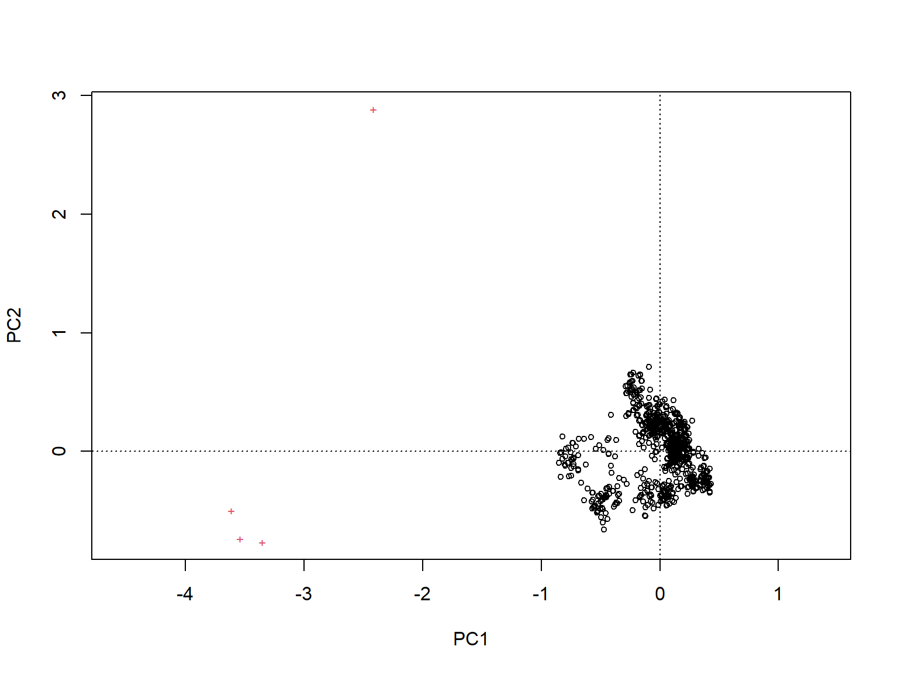
Well, that’s not very helpful. The default plot method is a bit underwhelming. I prefer to extract the PC scores (coordinates in the PC coordinate system) and build the plot manually. Note that in the ordination function in package vegan, observations are always referred to as “sites”, and variables as species. This is a result of the origin of vegan in community ecology.
While we’re at it, let’s assign some colors and shapes to the species (the actual species, not the "species").
spps <- sort(unique(dx.pca$species))
fams <- sort(unique(dx.pca$family))
col.spps <- hcl.colors(length(spps), palette = "Dark 3")
col.fams <- hcl.colors(length(fams), palette = "Dark 3")
pch.fams <- 15:18
names(col.spps) <- spps
names(col.fams) <- fams
names(pch.fams) <- fams
xy.samp <- scores(p1, display="sites", choices=1:2)
xy.vars <- scores(p1, display="species", choices=1:2)
par(mar=c(5,5,6,1), bty="n")
plot(xy.samp[,1], xy.samp[,2],
pch=pch.fams[dx.pca$family],
col=col.spps[dx.pca$species],
xlab="PC1 (75.3%)", ylab="PC2 (17.1%)")
scal <- 0.2
segments(0, 0, scal*xy.vars[,1], scal*xy.vars[,2], lwd=2)
text(1.03*scal*xy.vars[,1], 1.03*scal*xy.vars[,2],
rownames(xy.vars), cex=1.2)
legend(-1, 1.1, legend=spps, xpd=NA,
col=col.spps,
pch=pch.fams[tax$family[match(spps, tax$species)]],
ncol=3,
text.font=3, bty="n")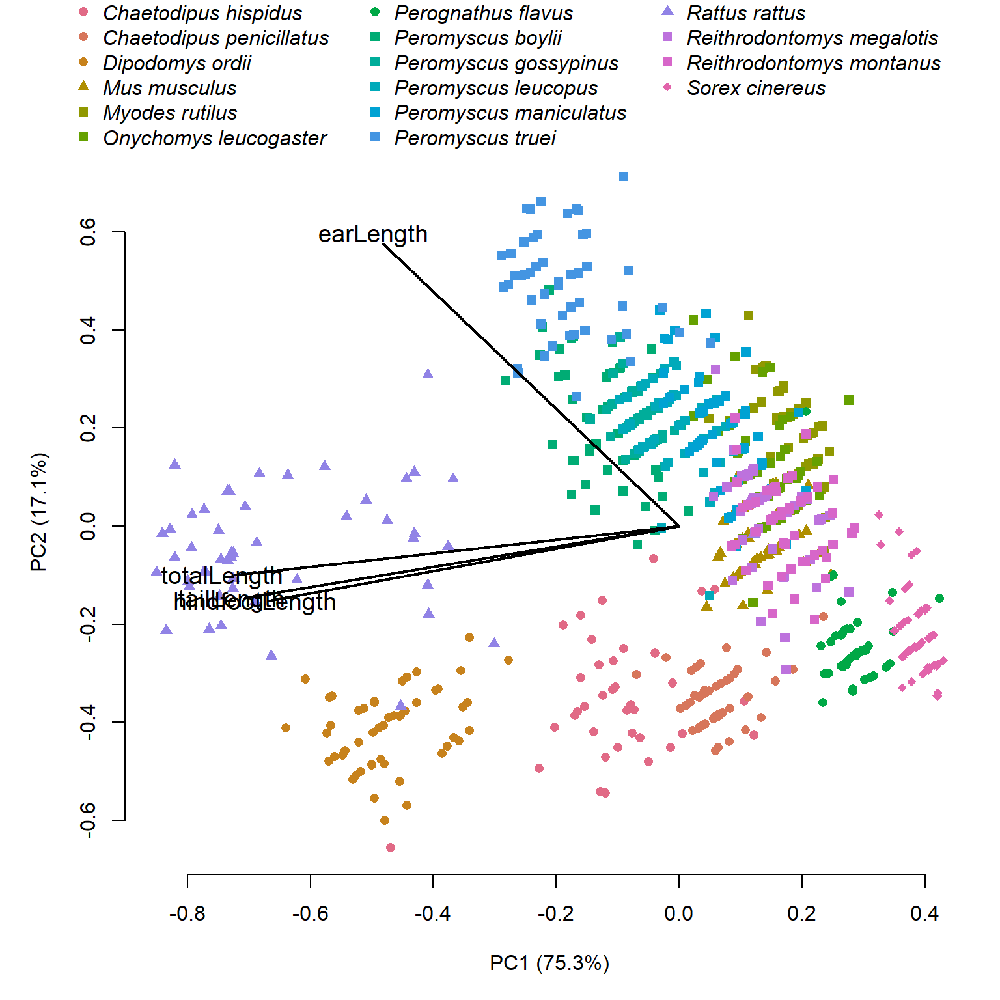
par(mar=c(5,5,6,1), bty="n")
plot(xy.samp[,1], xy.samp[,2],
pch=pch.fams[dx.pca$family],
col=col.spps[dx.pca$species],
xlab="PC1 (75.3%)", ylab="PC2 (17.1%)")
ordiellipse(p1, dx.pca$species,
col=col.spps, draw="polygon",
border=NA)
scal <- 0.2
segments(0, 0, scal*xy.vars[,1], scal*xy.vars[,2], lwd=2)
text(1.03*scal*xy.vars[,1], 1.03*scal*xy.vars[,2],
rownames(xy.vars), cex=1.2)
legend(-1, 1.1, legend=spps, xpd=NA,
col=col.spps,
pch=pch.fams[tax$family[match(spps, tax$species)]],
ncol=3,
text.font=3, bty="n")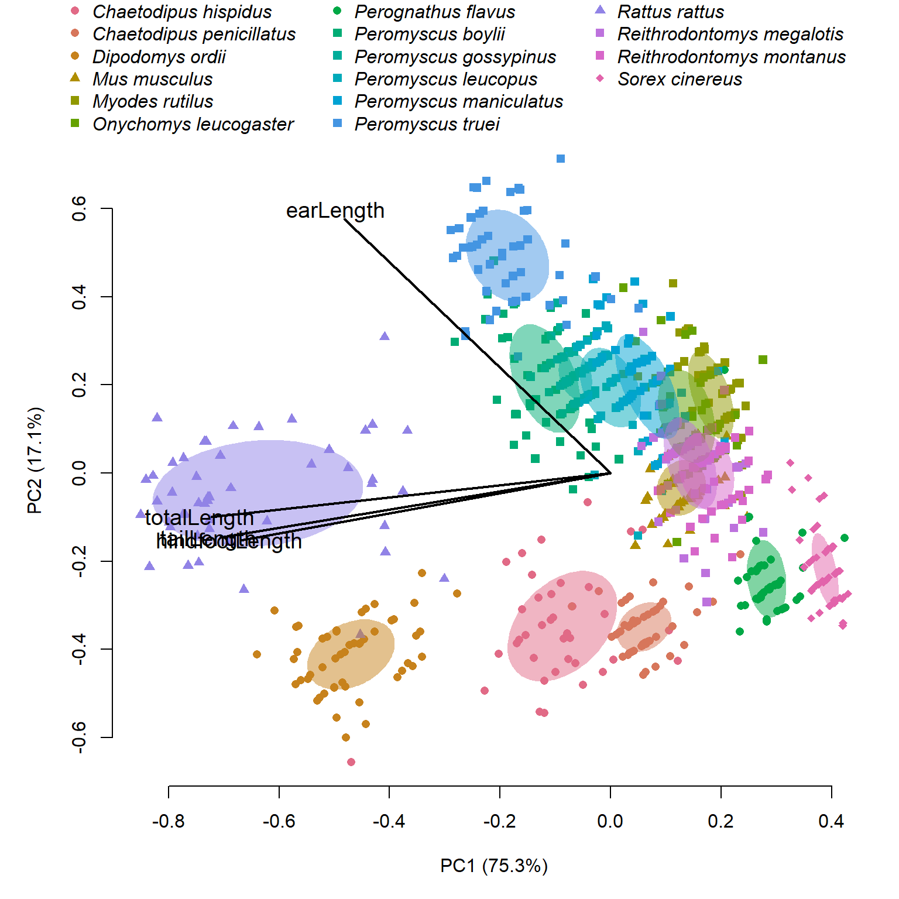
And color by family.
par(mar=c(5,5,6,1), bty="n")
plot(xy.samp[,1], xy.samp[,2],
pch=pch.fams[dx.pca$family],
col=col.fams[dx.pca$family],
xlab="PC1 (75.3%)", ylab="PC2 (17.1%)")
ordiellipse(p1, dx.pca$family,
col=col.fams, draw="polygon",
border=NA)
scal <- 0.2
segments(0, 0, scal*xy.vars[,1], scal*xy.vars[,2], lwd=2)
text(1.03*scal*xy.vars[,1], 1.03*scal*xy.vars[,2],
rownames(xy.vars), cex=1.2)
legend(-1, 1.1, legend=fams, xpd=NA,
fill=col.fams,
ncol=2, bty="n")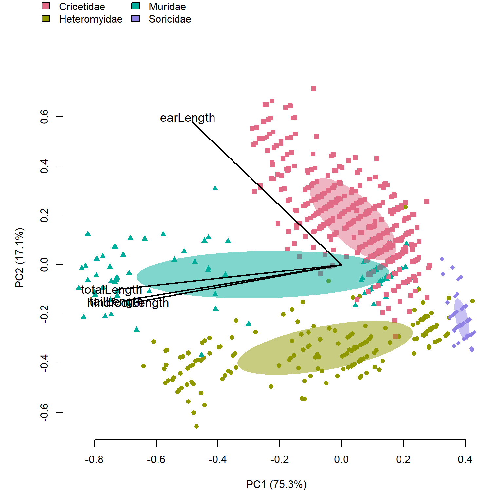
Next: factor out body mass using allometric equations, then refit PCA.
Work in progress!
27.2.2 Principal coordinates analysis (PCoA)
27.2.3 Correspondence analysis (CA)
27.2.4 Nonmetric multidimensional scaling (NMDS)
27.3 Constrained ordination methods
Constrained ordination methods, also called canonical ordination methods, identify major axes of multivariate variation that are associated with one or more explanatory variables. Unlike unconstrained ordination, which summarizes patterns in the response variables alone, constrained ordination incorporates information about potential predictors when constructing the ordination axes.